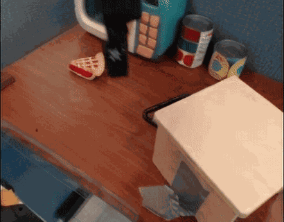
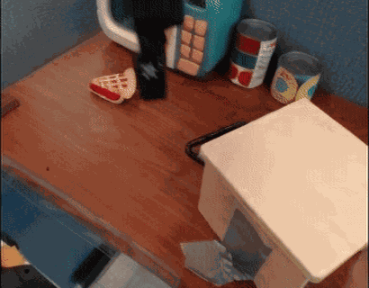
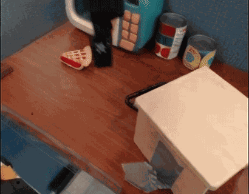

5 August 2025

Today we are announcing Genie 3, a general purpose world model that can generate an unprecedented diversity of interactive environments.
Given a text prompt, Genie 3 can generate dynamic worlds that you can navigate in real time at 24 frames per second, retaining consistency for a few minutes at a resolution of 720p.
At Google DeepMind, we have been pioneering research in simulated environments for over a decade, from training agents to master real-time strategy games to developing simulated environments for open-ended learning and robotics.
This work motivated our development of world models, which are AI systems that can use their understanding of the world to simulate aspects of it, enabling agents to predict how an environment will evolve and how their actions will affect it.
Each of these models marks progress along different capabilities of world simulation. Genie 3 is our first world model able to generate interactive video in real time, while also improving consistency and realism compared to Genie 2.